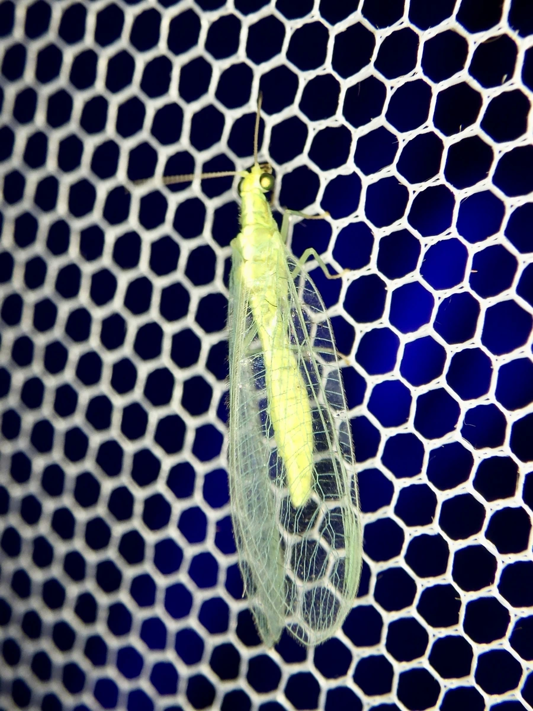

昆虫 · 动物界
中华草蛉 Chrysoperla sinica

常见的捕食性农田益虫，成虫体绿色、翅透明如纱，幼虫称“蚜狮”，捕食蚜虫和红蜘蛛，被用于生物防治。
- 分类
- 门节肢动物门纲昆虫纲目脉翅目科草蛉科属草蛉属
- 栖息环境
- 农田、果园、菜地、草地与林缘
- 地理分布
- 东亚，中国大部分地区及日本、朝鲜半岛
- 保护级别
- 暂无评估
物种志
中华草蛉成虫体长 1.0–1.5 cm，体形细长，呈浅绿色。它的复眼大而呈金属光泽，触角细长；两对翅透明如纱，翅脉细密呈网状，停歇时呈屋脊状覆在体上；足细长，适合爬行。
中华草蛉分布于东亚的中国、日本、朝鲜半岛，栖息于农田、果园、菜地、草地和林缘，是农林业中常见的捕食性天敌。成虫取食花蜜和花粉，也捕食蚜虫；幼虫被称为“蚜狮”，行动凶猛，捕食蚜虫、红蜘蛛、粉虱和蛾类卵，一只幼虫在发育期可捕食数百头蚜虫。草蛉每年发生多代，成虫在冬前会聚集越冬，雌虫将卵产在细长的丝柄上，使卵悬空以避免被天敌取食。中华草蛉被大量用于温室和果园的生物防治。
形态与习性
- 食性成虫取食花蜜花粉，幼虫捕食蚜虫、红蜘蛛等
- 体长成虫 1.0–1.5 cm
- 翅两对透明如纱的翅，脉纹网状，停歇时呈屋脊状
- 幼虫称“蚜狮”，一只幼虫可捕食数百头蚜虫
- 繁殖卵产在细长的丝柄上，悬空发育
- 应用被大量用于温室和果园的生物防治
趣味知识
- 中华草蛉的幼虫被称为“蚜狮”，捕食蚜虫十分凶猛。
- 它的卵产在细长的丝柄上，悬在空中以避免天敌取食。
- 成虫翅透明如纱，停歇时呈屋脊状覆在身体上。
- 草蛉是温室和果园中广泛应用的生物防治益虫。